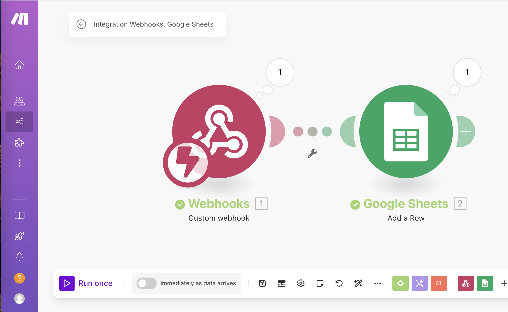
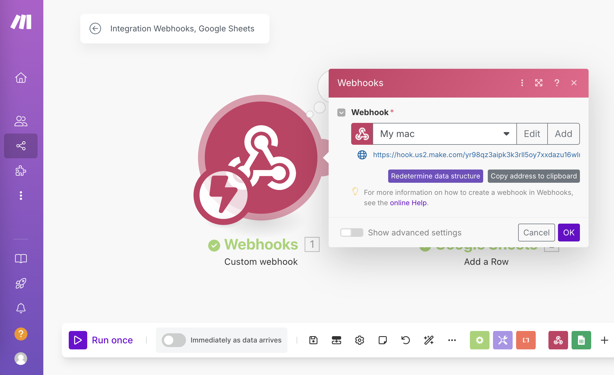
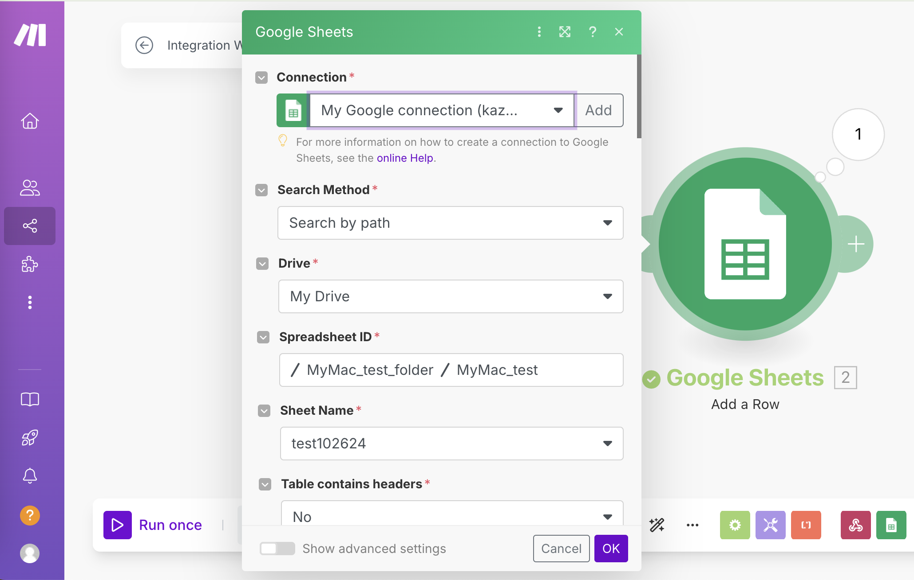
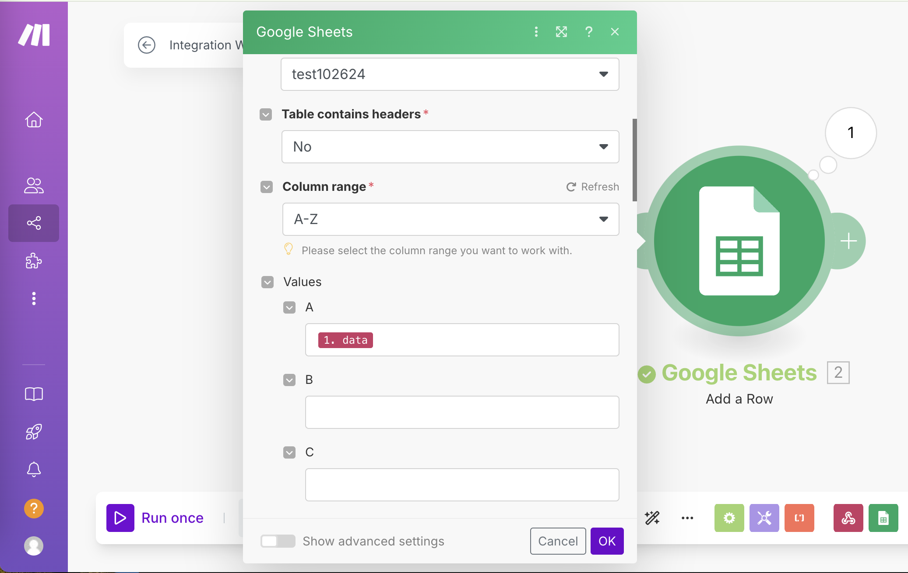
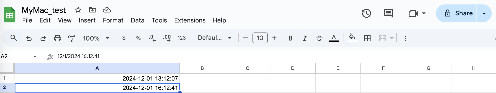

Toward my goal for remote sensing of my yard soil, I would like to divide its porject into several modules.
- module 1. Automatically recording data in Google Sheet (from my computer to Google Sheet).
- module 2. Sensing soil data using Raspberry pi 3 model B.
- module 3. Combining 1 and 2
Setting up module 1
Since my Rasppberry pi 3 model 3 runs under Python, I would like to use Python in my computer to send some data to Google Sheet. Currently I am learning Python using www.geeksforgeeks.org. To test Python I started to use Jupyter notebook, but switched to Jupyter notebook in Visual Studio Code because I’ve just started to use Visual Studio Code just because my colleague use it, which seems a user friendly interface for a cloud computing system for scientist called Jetstream2. Also VS code also work with Jupiter notebook (https://code.visualstudio.com/docs/datascience/jupyter-notebooks).
- Note1: Commenting in Python are [# or ““” “““”] (https://www.datacamp.com/tutorial/python-block-comment).
Another interface for python is RStudio, which is used for writing this blog.
There are three ways to operate Python in RStudio One advantage to use RStudio with Python is the reticulate package in R enable to access R data by Python. Please find more details in a RStudio site, Using Python with the RStudio IDE.
testing Python in RStudio IDE
print("Hello world")## Hello worldInstalling a python package from RStudio
Install “requests” through reticulate R package via conda (see https://rstudio.github.io/reticulate/articles/python_packages.html), which did not work
# create a new environment
conda_create("r-reticulate")
# install requests
conda_install("r-reticulate", "requests")
# import requests (it will be automatically discovered in "r-reticulate")
requests <- import("requests") # Did not work. error Simple Installation did work!
py_install("requests") # worked!Test obtaining date and time in Python
import datetime
import requests
data_to_send={}
data_to_send["data"]= str(datetime.datetime.now())
print(data_to_send)## {'data': '2024-12-01 18:27:53.695607'}Explanation of those codes for preparing Data to Send (explained by ChatGPT)
- data_to_send = {}: Creates an empty dictionary named data_to_send.
- data_to_send[“data”] = str(datetime.datetime.now()):
- Adds a key-value pair to the dictionary.
- The key is “data”, and the value is the current date and time,
- converted to a string. datetime.datetime.now() gets the current date and time,
- and str() converts it to a string format.
Sending obtained data in python to Google Sheet via Webhooks
Using Webhooks in make.com, which is formally Integromat, a workflow automation tool. Another way is using IFTTT. The third way is to use an Google Add On, called Webhookds for Sheets.
Let’s try sending date and time to Google Sheet using Webhooks in make.
import datetime
import requests
data_to_send={}
data_to_send["data"]= str(datetime.datetime.now())
print(data_to_send)## {'data': '2024-12-01 18:27:53.717031'}# For Webhooks in make.com
r = requests.post("https://hook.us2.make.com/yr98qz3aipk3k3rll5oy7xxdazu16wlr",json = data_to_send)Exporting the data to Google Sheet via Webhooks in make.com.
The date and time data had been exported to my Google Sheet once I click “Run Once” button in the scinario window in make.com (you have to lon into your account).



 # The data has been imported to the Google Sheet

sessionInfo()## R version 4.4.0 (2024-04-24)
## Platform: aarch64-apple-darwin20
## Running under: macOS Sonoma 14.4
##
## Matrix products: default
## BLAS: /Library/Frameworks/R.framework/Versions/4.4-arm64/Resources/lib/libRblas.0.dylib
## LAPACK: /Library/Frameworks/R.framework/Versions/4.4-arm64/Resources/lib/libRlapack.dylib; LAPACK version 3.12.0
##
## locale:
## [1] en_US.UTF-8/en_US.UTF-8/en_US.UTF-8/C/en_US.UTF-8/en_US.UTF-8
##
## time zone: America/Los_Angeles
## tzcode source: internal
##
## attached base packages:
## [1] stats graphics grDevices utils datasets methods base
##
## other attached packages:
## [1] reticulate_1.40.0
##
## loaded via a namespace (and not attached):
## [1] cli_3.6.3 knitr_1.48 rlang_1.1.4 xfun_0.49
## [5] png_0.1-8 jsonlite_1.8.9 rprojroot_2.0.4 htmltools_0.5.8.1
## [9] sass_0.4.9 rmarkdown_2.28 grid_4.4.0 evaluate_1.0.0
## [13] jquerylib_0.1.4 fastmap_1.2.0 yaml_2.3.10 lifecycle_1.0.4
## [17] bookdown_0.41 compiler_4.4.0 Rcpp_1.0.13 here_1.0.1
## [21] rstudioapi_0.16.0 blogdown_1.19 lattice_0.22-6 digest_0.6.37
## [25] R6_2.5.1 bslib_0.8.0 Matrix_1.7-0 tools_4.4.0
## [29] cachem_1.1.0